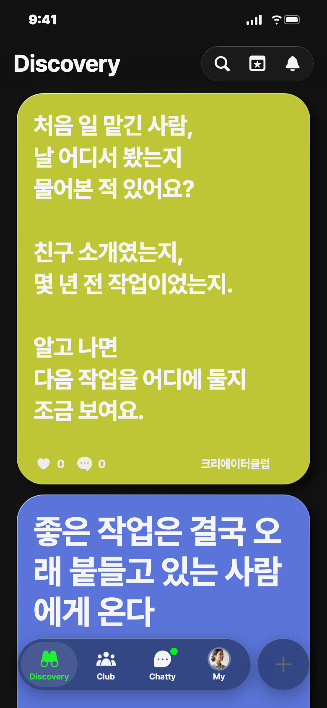
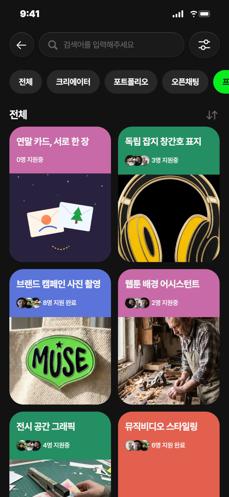
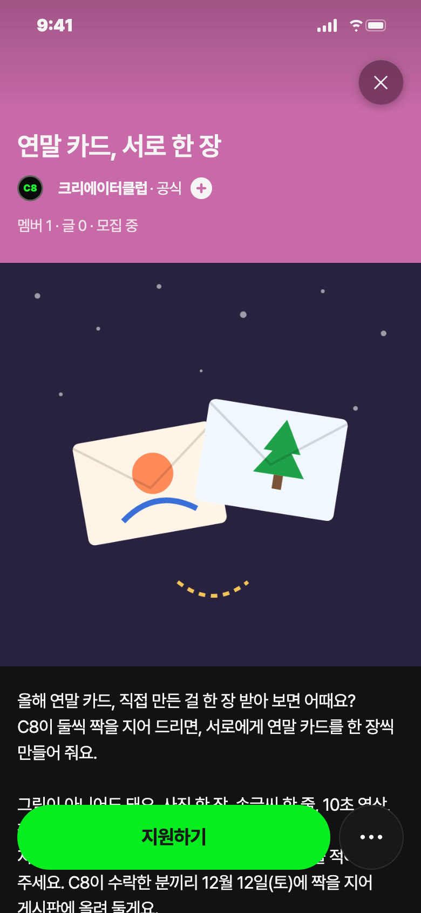
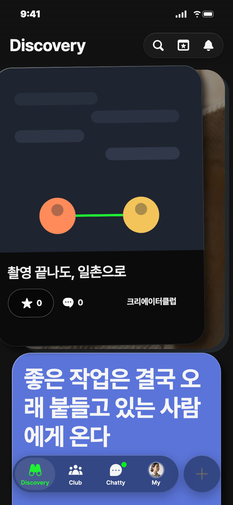
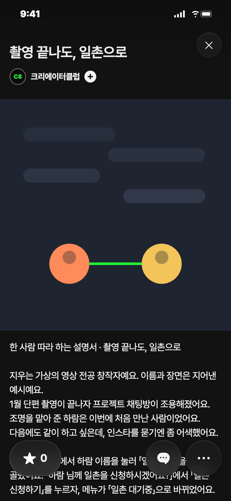

C8 앱 게시 시안 · 2026. 11. 28. 토요일 · 쉬는 날, 세 안 비축
비축 · 영감 · 월요일 자리 후보 · 게시일 미정 · 노랑

왜 지금: 연말에 올해 받은 일을 돌아볼 때, 일이 어디서 왔는지 한 번 묻게 함 — 일 들어오는 프로필 바탕.
보낼 사람: 외주 두세 번 받아 본 동기에게 「너 첫 일 어디서 왔는지 알아?」
받고 싶은 댓글: 예시·가상: 물어봤더니 2년 전 올린 포스터 보고 연락했대요.
참고: 배경색은 앱이 무작위로 정해요. 시안 색은 예시.
영감 글
처음 일 맡긴 사람, 날 어디서 봤는지 물어본 적 있어요? 친구 소개였는지, 몇 년 전 작업이었는지. 알고 나면 다음 작업을 어디에 둘지 조금 보여요.
비축 · 프로젝트 · 수요일 자리 후보 · 게시일 미정 · 분홍


왜 지금: 연말 카드 철, 날짜 있는 판으로 짝에게 한 장 만들어 주기 — 결과물이 각자 포폴에 남음.
보낼 사람: 손글씨 좋아하는 동기에게 「이거 같이 하자, 누구랑 짝 될지 몰라」
받고 싶은 지원 채팅: 예시·가상: 사진 해요. 필름 느낌 카드면 좋겠어요.
게시 전: 수락·짝 지을 운영자 한 사람.
제목
연말 카드, 서로 한 장
모집 내용
연말 카드를 서로 만들어 줄 짝을 찾아요. 하는 일 한 줄과 받고 싶은 카드 느낌을 적어 주세요.
설명
올해 연말 카드, 직접 만든 걸 한 장 받아 보면 어때요? C8이 둘씩 짝을 지어 드리면, 서로에게 연말 카드를 한 장씩 만들어 줘요. 그림이 아니어도 돼요. 사진 한 장, 손글씨 한 줄, 10초 영상, 짧은 노래도 카드가 돼요. 지원할 때 하는 일 한 줄과 받고 싶은 카드 느낌을 적어 주세요. C8이 수락한 분끼리 12월 12일(토)에 짝을 지어 게시판에 올려 둘게요. 짝이 정해지면 채팅방에서 서로 하는 일과 좋아하는 색 정도만 물어봐요. 뭘 만드는지는 24일까지 비밀이에요. 12월 24일(목) 낮 12시부터 저녁 8시 사이에, 만든 카드를 각자 포트폴리오에 올리고 짝을 @로 불러 주세요. 지원은 12월 11일(금)까지예요. 상품은 없어요. 24일 저녁엔, 내 이름이 불린 카드가 한 장 와 있을 거예요.
비축 · 포트폴리오 · 설명서 다음 편 후보 · 게시일 미정


왜 지금: 같이 한 일이 끝나고 사람이 흩어질 때 — 일촌 신청·수락 기능 하나.
보낼 사람: 프로젝트 끝나면 연락 끊기는 친구에게 「일촌 걸어 둬」
받고 싶은 댓글: 예시·가상: 단톡방 나가기 전에 일촌부터 걸어야겠네요.
확인 범위: iOS 26.46.0 태그 코드·디자인 원본. 실기기 화면은 나나 확인 전.
제목
촬영 끝나도, 일촌으로
설명
한 사람 따라 하는 설명서 · 촬영 끝나도, 일촌으로 지우는 가상의 영상 전공 창작자예요. 이름과 장면은 지어낸 예시예요. 1월 단편 촬영이 끝나자 프로젝트 채팅방이 조용해졌어요. 조명을 맡아 준 하람은 이번에 처음 만난 사람이었어요. 다음에도 같이 하고 싶은데, 인스타를 묻기엔 좀 어색했어요. 지우는 채팅방에서 하람 이름을 눌러 「일촌 신청」을 골랐어요. 「하람 님께 일촌을 신청하시겠어요?」에서 「일촌 신청하기」를 누르자, 메뉴가 「일촌 대기중」으로 바뀌었어요. 하람은 인맥 관리 「일촌 요청」에서 지우 이름을 보고 「수락」을 눌렀어요. 이제 둘은 서로의 일촌 목록에 있어요. 석 달 뒤 다음 단편 조명을 구할 때, 지우는 일촌 목록부터 열었어요.